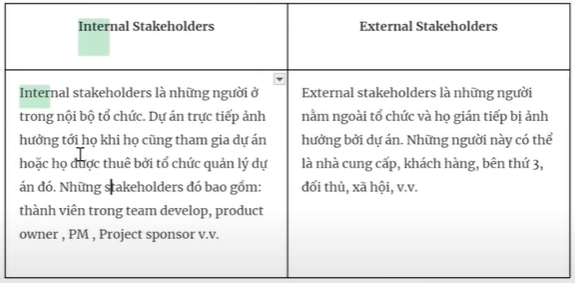
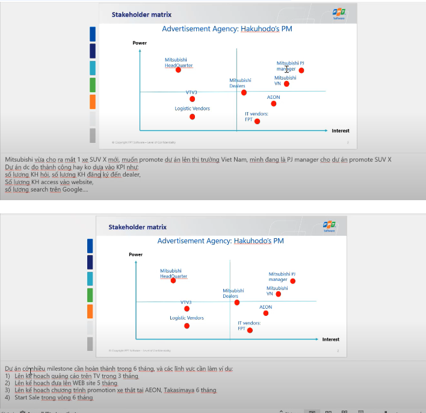
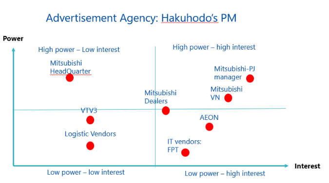

Stakeholder power / interest grid
Planning / create project management plan / nằm trong giai đoạn stakeholder management plan
Internal stakeholder / External stakeholder
  High power - High interest: these are the stakeholders are decision makers and have the biggest impact on the project success and hence we must closely manage their expectations.
High power - Low Interest: these are the stakeholder needed to be kept in loop, these stakeholders need to be kept satisfied even though they aren’t interested because they yield power. These type of stakeholders should be dealt with cautiously as well since they may use their power in a not desired way in the project if they become unsatisfied.
Low power – High interest: keep these people adequately informed, and talk to them to ensure that no major issues are arising. These people can often be very helpful with the detail of your project.
Low power - low interest: monitor these people, but do not bore them with excessive communication
Bài làm :
| High power – low interest ABC company headquarter |
High power – high interest PM , ABC VN company |
| Low power – low interest VTV 3 Logistic vendor |
Low power – high interest AEON IT vendors |
Our strategy is :
High power- high interest: closely manage their expectations.
High power- low interest: keep satisfied
Low power - high interest: keep informed
Low power - low interest: monitor these people, but do not bore them with excessive communication
Ma trận quyền lực / lợi ích của các bên liên quan
Lập kế hoạch / tạo kế hoạch quản lý dự án / nằm trong giai đoạn lập kế hoạch quản lý các bên liên quan
Các bên liên quan nội bộ / Các bên liên quan bên ngoài
Quyền lực cao - Lợi ích cao: đây là những bên liên quan là người ra quyết định và có ảnh hưởng lớn nhất đến sự thành công của dự án, do đó chúng ta phải quản lý kỳ vọng của họ một cách chặt chẽ.
Quyền lực cao - Lợi ích thấp: đây là những bên liên quan cần được giữ trong vòng thông tin, những bên liên quan này cần được giữ hài lòng ngay cả khi họ không quan tâm vì họ có quyền lực. Những loại bên liên quan này cũng cần được xử lý một cách cẩn thận vì họ có thể sử dụng quyền lực của mình theo cách không mong muốn trong dự án nếu họ không hài lòng.
Quyền lực thấp - Lợi ích cao: giữ cho những người này được thông tin đầy đủ, và nói chuyện với họ để đảm bảo rằng không có vấn đề lớn nào xảy ra. Những người này thường rất hữu ích với chi tiết của dự án của bạn.
Quyền lực thấp - Lợi ích thấp: giám sát những người này, nhưng đừng làm họ chán ngấy với sự giao tiếp quá mức.
Bài làm:
| Quyền lực cao - lợi ích thấp Trụ sở công ty ABC |
Quyền lực cao - lợi ích cao Quản lý dự án, công ty ABC VN |
| Quyền lực thấp - lợi ích thấp VTV 3 Nhà cung cấp logistics |
Quyền lực thấp - lợi ích cao AEON Các nhà cung cấp IT |
Chiến lược của chúng tôi là:
Quyền lực cao - lợi ích cao: quản lý kỳ vọng của họ một cách chặt chẽ.
Quyền lực cao - lợi ích thấp: giữ họ hài lòng.
Quyền lực thấp - lợi ích cao: giữ cho họ được thông tin đầy đủ.
Quyền lực thấp - lợi ích thấp: giám sát những người này, nhưng đừng làm họ chán ngấy với sự giao tiếp quá mức.